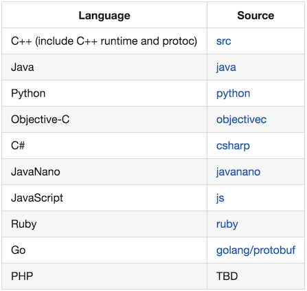

在网络通信和通用数据交换等应用场景中经常使用的技术是 JSON 或 XML，本教程介绍另外一个数据交换的协议的工具ProtoBuf。
protobuf是google提供的一个开源序列化框架，类似于XML，JSON这样的数据表示语言，详情访问protobuf的google官方网站。
protocol buffers （ProtoBuf）是一种语言无关、平台无关、可扩展的序列化结构数据的方法，它可用于（数据）通信协议、数据存储等。
Protocol Buffers 是一种灵活，高效，自动化机制的结构数据序列化方法－可类比 XML，但是比 XML 更小（3 ~ 10倍）、更快（20 ~ 100倍）、更为简单。
json\xml都是基于文本格式，protobuf是二进制格式。
你可以通过 ProtoBuf 定义数据结构，然后通过 ProtoBuf 工具生成各种语言版本的数据结构类库，用于操作 ProtoBuf 协议数据
本教程介绍的是最新的protobuf proto3版本的语法。
1、需要和其它系统做消息交换的，对消息大小很敏感的。那么protobuf适合了，它语言无关，消息空间相对xml和json等节省很多。
2、小数据的场合。如果你是大数据，用它并不适合。
3、项目语言是c++,java,python的，因为它们可以使用google的源生类库，序列化和反序列化的效率非常高。其它的语言需要第三方或者自己写，序列化和反序列化的效率不保证。
截止目前，Protobuf官方工程主页上显示的已支持的开发语言多达10种，分别有：C++、Java、Python、Objective-C、C#、JavaNano、JavaScript、Ruby、Go、PHP，基本上主流的语言都已支持。

总体而言，protobuf还是非常好用的，被很多开源系统用于数据通信的工具，在google也是核心的基础库。
使用 ProtoBuf ，首先需要通过 ProtoBuf 语法定义数据结构(消息)，这些定义好的数据结构保存在.proto为后缀的文件中。
文件生成可以使用 JSON 转 Protobuf 在线工具
例子:
文件名: s2c_common.proto
// 指定protobuf的版本，proto3是最新的语法版本
syntax = "proto3";
// 定义数据结构，message 你可以想象成java的class，c语言中的struct
message pong {
string name = 1; // 定义一个string类型的字段，字段名字为data, 序号为1
int32 status = 2; // 定义一个int32类型的字段，字段名字为status, 序号为2
}问价名：c2s_common.proto
syntax = "proto3";
package c2s_common;
// 客户端发送ping
message ping {
string name = 1;
}说明：proto文件中，字段后面的序号，不能重复，定义了就不能修改，可以理解成字段的唯一ID。
protobuf的编译器叫 protoc，在上面的网址中找到最新版本的安装包，下载安装。
打开命令窗口执行protoc命令，没有报错的话，就已经安装成功。
protoc编译器支持将proto文件编译成多种语言版本的代码，我们这里以 php 为例。
在项目根目录, 执行下面命令
protoc --php_out="protobuf" "protobuf/c2s_common.proto"
protoc --php_out="protobuf" "protobuf/s2c_common.proto"
# 参数定义
--php_out= PHP 文件输出目录然后在protobuf目录生成php类文件，这个就是我们刚才用protobuf语法定义的数据结构对应的php类文件目录，通过这个类文件我们就可以操作定义的数据结构。
├── protobuf
│ ├── C2s_common
│ | ├── xxx.php
│ | ├── yyy.php
│ | └── zzz.php
│ ├── S2c_common
│ | ├── xxx.php
│ | ├── yyy.php
│ | └── zzz.php
│ ├── GPBMetadata
| └── Protobuf
│ │ └── C2SCommon.php
│ │ └── S2CCommon.php因为上面的例子使用的是 php, 我们先导入protobuf的基础类库。
PHP 中可以使用 C 扩展 或 依赖包 google/protobuf 处理 protobuf，纯 PHP 包旨在 为更广泛的 PHP 平台提供可用性，而 c 扩展 旨在提供更高的性能。C 扩展安装参考上述文档，本文主要依靠 google/protobuf 依赖。
composer require google/protobuf
composer dump-autoload在项目中使用，需要引入对应的代码才可以，变更 composer.json 文件增加 autoload 配置
"autoload": {
"psr-4": {
"": "./",
"Lib\\": "lib/",
+ "S2c_common\\": "./protobuf/S2c_common",
+ "C2s_common\\": "./protobuf/C2s_common",
+ "GPBMetadata\\": "./protobuf/GPBMetadata"
}
},使用ProtoBuf的例子。
use S2c_common\pong;
$pb=new pong();
// 设置字段值
$pb->setName('demo');
//序列化，数据不可看, 对完传输的就是这个
$string=$pb->serializeToString();
//序列化，数据可看
$string=$pb->serializeToJsonString();
//反序列化
$pb=new pong();
//从db中获取到的序列化值，反序列化赋值给$pb，然后就可以正常使用
$pb->mergeFromString($string);
$pb->mergeFromJsonString($string);
$pb->getName();//输出demo提示：大家不必在意不同的语言具体怎么使用protobuf, 后面会有专门的章节介绍。
[1] 官方网站: https://protobuf.dev/[2] protobuf Github 仓库: https://github.com/protocolbuffers/protobuf[3] JSON 转 Protobuf 在线工具: https://toolin.cn/json2proto[4] protoc: https://google.github.io/proto-lens/installing-protoc.html[5] protobuf php参考文档: https://protobuf.dev/reference/php/php-generated/[6] google/protobuf: https://github.com/protocolbuffers/protobuf/tree/main/php